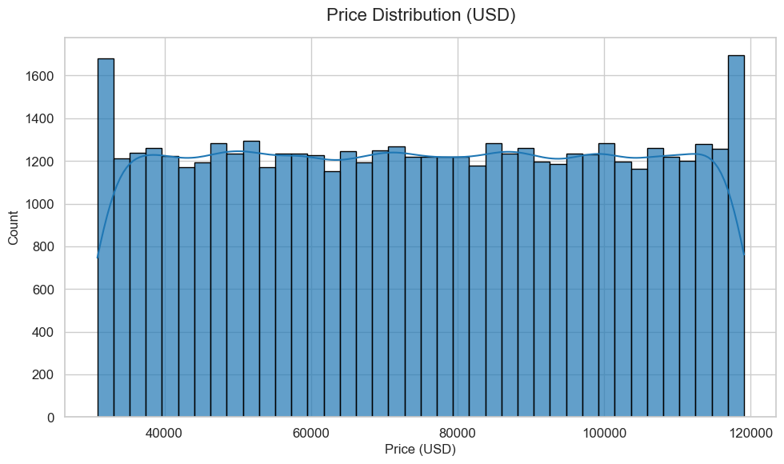
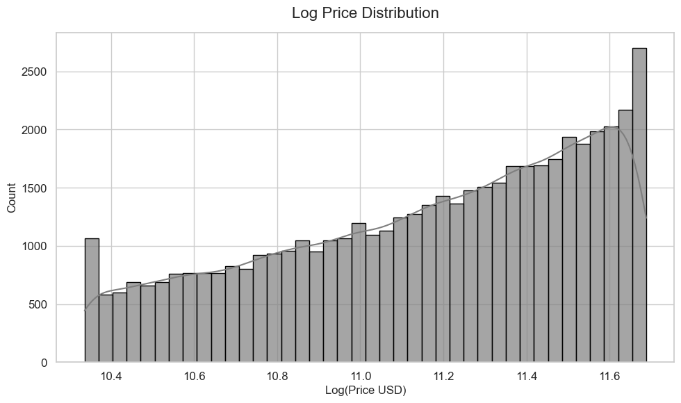
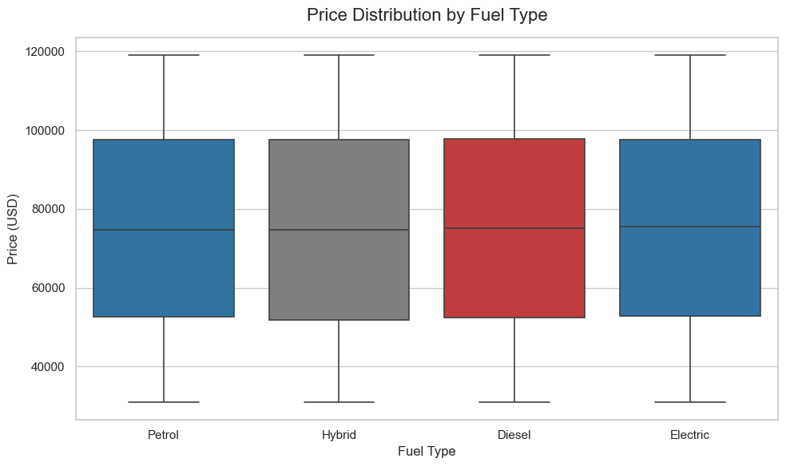
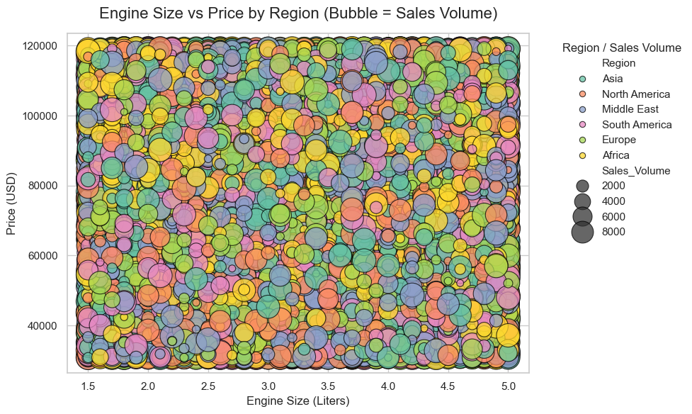
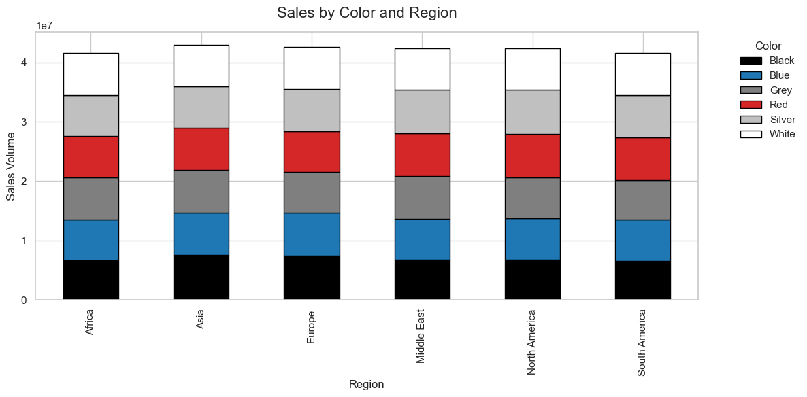
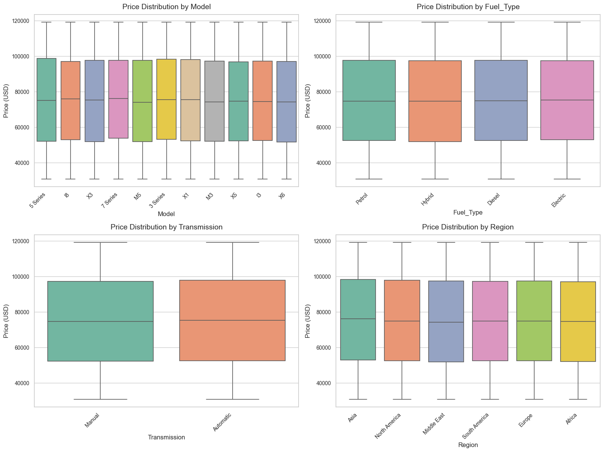
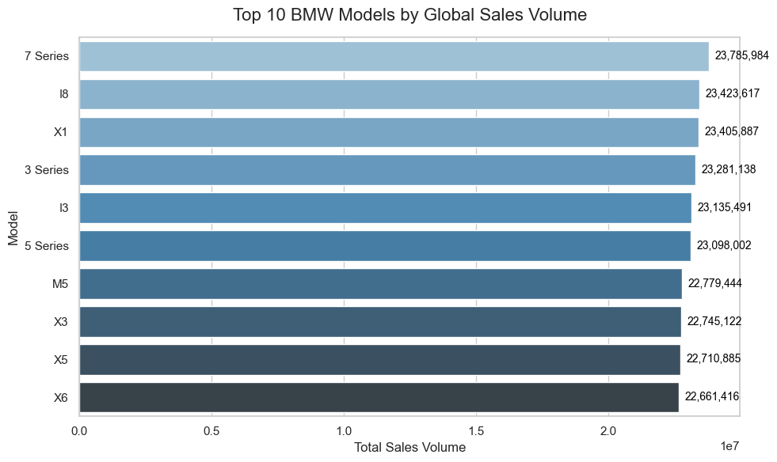
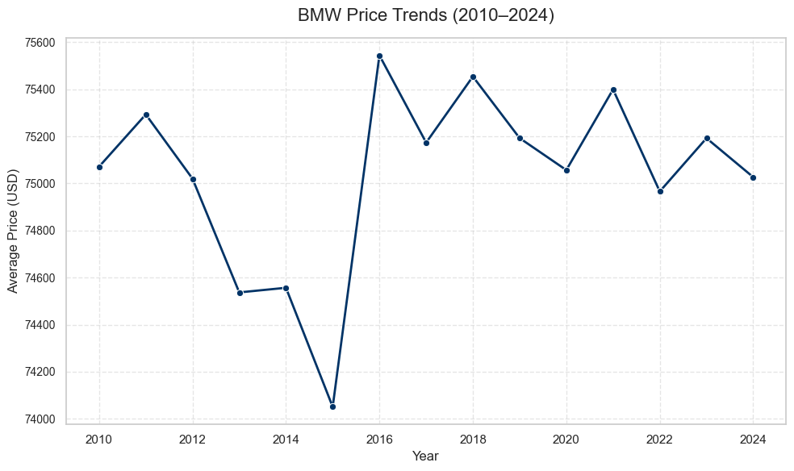
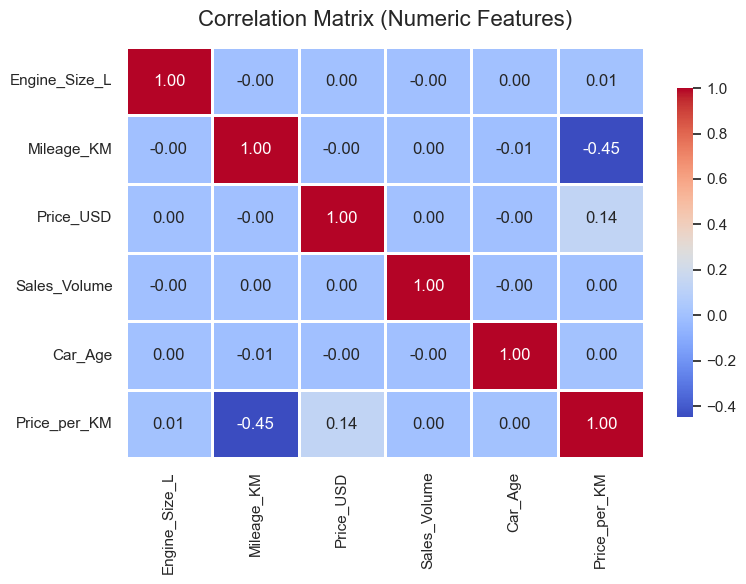
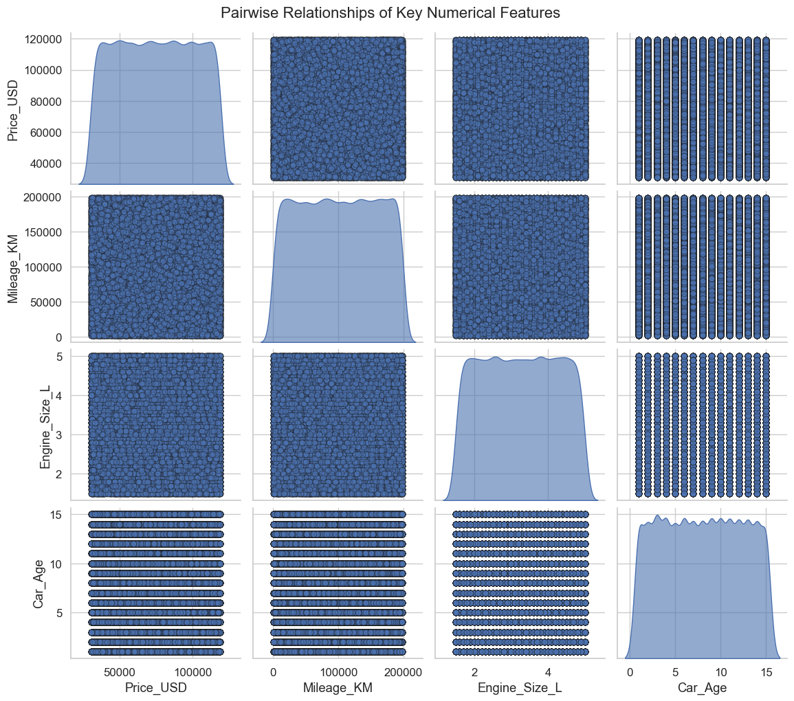

# Import Required Libraries
import pandas as pd
import numpy as np
import matplotlib.pyplot as plt
import seaborn as sns
# Set display options
pd.set_option('display.max_columns', None)
sns.set(style="whitegrid")
import os
import warnings
warnings.filterwarnings("ignore")
%matplotlib inlineBMW Car Sales Data Preparation & Cleaning
INFO-523 Final Project | Min Set Khant (Solo)
# Load the Dataset
# Load the dataset from the parent folder's data directory
df= pd.read_csv("../data/bmw_worldwide_sales.csv")
# quick snapshot
print("shape:", df.shape)
display(df.head(10))
display(df.info())
display(df.describe(include='all').T)shape: (50000, 11)| Model | Year | Region | Color | Fuel_Type | Transmission | Engine_Size_L | Mileage_KM | Price_USD | Sales_Volume | Sales_Classification | |
|---|---|---|---|---|---|---|---|---|---|---|---|
| 0 | 5 Series | 2016 | Asia | Red | Petrol | Manual | 3.5 | 151748 | 98740 | 8300 | High |
| 1 | i8 | 2013 | North America | Red | Hybrid | Automatic | 1.6 | 121671 | 79219 | 3428 | Low |
| 2 | 5 Series | 2022 | North America | Blue | Petrol | Automatic | 4.5 | 10991 | 113265 | 6994 | Low |
| 3 | X3 | 2024 | Middle East | Blue | Petrol | Automatic | 1.7 | 27255 | 60971 | 4047 | Low |
| 4 | 7 Series | 2020 | South America | Black | Diesel | Manual | 2.1 | 122131 | 49898 | 3080 | Low |
| 5 | 5 Series | 2017 | Middle East | Silver | Diesel | Manual | 1.9 | 171362 | 42926 | 1232 | Low |
| 6 | i8 | 2022 | Europe | White | Diesel | Manual | 1.8 | 196741 | 55064 | 7949 | High |
| 7 | M5 | 2014 | Asia | Black | Diesel | Automatic | 1.6 | 121156 | 102778 | 632 | Low |
| 8 | X3 | 2016 | South America | White | Diesel | Automatic | 1.7 | 48073 | 116482 | 8944 | High |
| 9 | i8 | 2019 | Europe | White | Electric | Manual | 3.0 | 35700 | 96257 | 4411 | Low |
<class 'pandas.core.frame.DataFrame'>
RangeIndex: 50000 entries, 0 to 49999
Data columns (total 11 columns):
# Column Non-Null Count Dtype
--- ------ -------------- -----
0 Model 50000 non-null object
1 Year 50000 non-null int64
2 Region 50000 non-null object
3 Color 50000 non-null object
4 Fuel_Type 50000 non-null object
5 Transmission 50000 non-null object
6 Engine_Size_L 50000 non-null float64
7 Mileage_KM 50000 non-null int64
8 Price_USD 50000 non-null int64
9 Sales_Volume 50000 non-null int64
10 Sales_Classification 50000 non-null object
dtypes: float64(1), int64(4), object(6)
memory usage: 4.2+ MBNone| count | unique | top | freq | mean | std | min | 25% | 50% | 75% | max | |
|---|---|---|---|---|---|---|---|---|---|---|---|
| Model | 50000 | 11 | 7 Series | 4666 | NaN | NaN | NaN | NaN | NaN | NaN | NaN |
| Year | 50000.0 | NaN | NaN | NaN | 2017.0157 | 4.324459 | 2010.0 | 2013.0 | 2017.0 | 2021.0 | 2024.0 |
| Region | 50000 | 6 | Asia | 8454 | NaN | NaN | NaN | NaN | NaN | NaN | NaN |
| Color | 50000 | 6 | Red | 8463 | NaN | NaN | NaN | NaN | NaN | NaN | NaN |
| Fuel_Type | 50000 | 4 | Hybrid | 12716 | NaN | NaN | NaN | NaN | NaN | NaN | NaN |
| Transmission | 50000 | 2 | Manual | 25154 | NaN | NaN | NaN | NaN | NaN | NaN | NaN |
| Engine_Size_L | 50000.0 | NaN | NaN | NaN | 3.24718 | 1.009078 | 1.5 | 2.4 | 3.2 | 4.1 | 5.0 |
| Mileage_KM | 50000.0 | NaN | NaN | NaN | 100307.20314 | 57941.509344 | 3.0 | 50178.0 | 100388.5 | 150630.25 | 199996.0 |
| Price_USD | 50000.0 | NaN | NaN | NaN | 75034.6009 | 25998.248882 | 30000.0 | 52434.75 | 75011.5 | 97628.25 | 119998.0 |
| Sales_Volume | 50000.0 | NaN | NaN | NaN | 5067.51468 | 2856.767125 | 100.0 | 2588.0 | 5087.0 | 7537.25 | 9999.0 |
| Sales_Classification | 50000 | 2 | Low | 34754 | NaN | NaN | NaN | NaN | NaN | NaN | NaN |
Cleaning & standardization of BMW car sales dataset for analysis and modeling.
# Copy original for safety
df_raw = df.copy()
# Normalize column names
df.columns = [c.strip() for c in df.columns]
# Standardzing string columns
str_cols = ['Model', 'Region', 'Color', 'Fuel_Type', 'Transmission', 'Sales_Classification']
for c in str_cols:
df[c] = df[c].astype(str).str.strip().replace({'nan': np.nan})
df[c] = df[c].str.title() # Fix Year and numeric types
df['Year'] = pd.to_numeric(df['Year'], errors='coerce')
num_cols = ['Engine_Size_L','Mileage_KM','Price_USD','Sales_Volume']
for c in num_cols:
df[c] = pd.to_numeric(df[c], errors='coerce')# Add Derived Feature — Car Age
CURRENT_YEAR = 2025
df['Car_Age'] = CURRENT_YEAR - df['Year']# Transmission normalization
df['Transmission'] = df['Transmission'].replace({
'Auto': 'Automatic',
'Man': 'Manual',
'Automated Manual': 'Automatic'
})# If fuel is present as one-hot, consolidate:
if set(['Fuel_Type_Petrol','Fuel_Type_Hybrid','Fuel_Type_Electric']).issubset(df.columns):
df['Fuel_Type'] = np.select(
[df['Fuel_Type_Petrol'] == True, df['Fuel_Type_Hybrid'] == True, df['Fuel_Type_Electric'] == True],
['Petrol','Hybrid','Electric'],
default=np.nan
)
df['Fuel_Type'] = df['Fuel_Type'].fillna('Other')# Create log Price feature for modeling
df['Log_Price_USD'] = np.log1p(df['Price_USD'])# Missing Value and duplicate Handling
dups = df.duplicated().sum()
print("duplicates:", dups)
if dups>0:
df = df.drop_duplicates()duplicates: 0# imputation:
df['Engine_Size_L'] = df.groupby('Model')['Engine_Size_L'].transform(lambda x: x.fillna(x.median()))
df['Engine_Size_L'] = df['Engine_Size_L'].fillna(df['Engine_Size_L'].median())
# Drop rows missing the target Price_USD
df = df[~df['Price_USD'].isna()].copy()
# After cleaning
print("shape after cleaning:", df.shape)
print(df.isna().sum())shape after cleaning: (50000, 13)
Model 0
Year 0
Region 0
Color 0
Fuel_Type 0
Transmission 0
Engine_Size_L 0
Mileage_KM 0
Price_USD 0
Sales_Volume 0
Sales_Classification 0
Car_Age 0
Log_Price_USD 0
dtype: int64Outlier detection & handling
from scipy import stats
# Flag extreme price outliers using IQR:
def flag_outliers_iqr(series, k=1.5):
q1, q3 = series.quantile([0.25,0.75])
iqr = q3 - q1
lower, upper = q1 - k*iqr, q3 + k*iqr
return (series < lower) | (series > upper), lower, upper
for col in ['Price_USD','Mileage_KM','Engine_Size_L','Sales_Volume']:
mask, low, up = flag_outliers_iqr(df[col].dropna())
pct = mask.mean()*100
print(f"{col}: outlier pct ~ {pct:.2f}%, lower={low:.2f}, upper={up:.2f}")
# Option: keep but cap at 1st/99th percentiles
for col in ['Price_USD','Mileage_KM','Sales_Volume']:
lower, upper = df[col].quantile(0.01), df[col].quantile(0.99)
df[col] = df[col].clip(lower, upper)Price_USD: outlier pct ~ 0.00%, lower=-15355.50, upper=165418.50
Mileage_KM: outlier pct ~ 0.00%, lower=-100500.38, upper=301308.62
Engine_Size_L: outlier pct ~ 0.00%, lower=-0.15, upper=6.65
Sales_Volume: outlier pct ~ 0.00%, lower=-4835.88, upper=14961.12Feature engineering (Useful Features)
# Create the feautures
# Price per KM
df['Price_per_KM'] = df['Price_USD'] / (df['Mileage_KM'].replace(0, np.nan))
df['Price_per_KM'] = df['Price_per_KM'].fillna(df['Price_per_KM'].median())# Engine size buckets
df['Engine_Bin'] = pd.cut(df['Engine_Size_L'], bins=[0,1.6,2.0,3.0,4.0,10],
labels=['<=1.6','1.7-2.0','2.1-3.0','3.1-4.0','>4.0'])
# Age bucket
df['Age_Bin'] = pd.cut(df['Car_Age'], bins=[-1,1,3,6,10,30], labels=['0-1','2-3','4-6','7-10','10+'])
# Model popularity (sales per model)
model_sales = df.groupby('Model')['Sales_Volume'].sum().reset_index().rename(columns={'Sales_Volume':'Total_Sales_Model'})
df = df.merge(model_sales, on='Model', how='left')Exploratory Visualizations
# Price Distribution
plt.figure(figsize=(10, 6))
sns.histplot(
df['Price_USD'],
bins=40,
kde=True,
color='#1f77b4',
edgecolor='black',
alpha=0.7
)
plt.title("Price Distribution (USD)", fontsize=16, pad=15)
plt.xlabel("Price (USD)", fontsize=12)
plt.ylabel("Count", fontsize=12)
plt.tight_layout()
plt.show()
# Log Price Distribution
plt.figure(figsize=(10, 6))
sns.histplot(
df['log_Price_USD'],
bins=40,
kde=True,
color='#7f7f7f',
edgecolor='black',
alpha=0.7
)
plt.title("Log Price Distribution", fontsize=16, pad=15)
plt.xlabel("Log(Price USD)", fontsize=12)
plt.ylabel("Count", fontsize=12)
plt.tight_layout()
plt.show()


# Price by Fuel Type (boxplot)
plt.figure(figsize=(10, 6))
sns.boxplot(
data=df,
x='Fuel_Type',
y='Price_USD',
palette=['#1f77b4', '#7f7f7f', '#d62728'],
fliersize=5,
linewidth=1.2
)
plt.title("Price Distribution by Fuel Type", fontsize=16, pad=15)
plt.xlabel("Fuel Type", fontsize=12)
plt.ylabel("Price (USD)", fontsize=12)
plt.tight_layout()
plt.show()
# Engine Size vs Price (bubble chart)
plt.figure(figsize=(10, 6))
sns.scatterplot(
data=df,
x='Engine_Size_L',
y='Price_USD',
hue='Region',
size='Sales_Volume',
sizes=(50, 600),
alpha=0.75,
edgecolor='black',
linewidth=0.8,
palette='Set2'
)
plt.title("Engine Size vs Price by Region (Bubble = Sales Volume)", fontsize=16, pad=15)
plt.xlabel("Engine Size (Liters)", fontsize=12)
plt.ylabel("Price (USD)", fontsize=12)
plt.legend(
title="Region / Sales Volume",
bbox_to_anchor=(1.05, 1),
loc='upper left',
frameon=False
)
plt.tight_layout()
plt.show()
# Top-selling models by region
region_model_sales = (
df.groupby(['Region', 'Model'])['Sales_Volume']
.sum()
.reset_index()
)
# Pick the top-selling model in each region
top_per_region = region_model_sales.loc[
region_model_sales.groupby('Region')['Sales_Volume'].idxmax()
]
# Plot
plt.figure(figsize=(10, 5))
sns.barplot(
data=top_per_region,
x='Region',
y='Sales_Volume',
hue='Model',
dodge=False,
palette=['#003366', '#1f77b4', '#7f8c8d', '#d62728', '#c0c0c0']
)
plt.title("Top-Selling BMW Model per Region", fontsize=16, pad=15)
plt.xlabel("Region", fontsize=12)
plt.ylabel("Sales Volume", fontsize=12)
plt.legend(title="Model", bbox_to_anchor=(1.05, 1), loc='upper left', frameon=False)
plt.tight_layout()
plt.show()
# Sales by Color and Region
# Create the pivot table
pivot_color = (
df.groupby(['Region', 'Color'])['Sales_Volume']
.sum()
.unstack()
.fillna(0)
)
# Plot
pivot_color.plot(
kind='bar',
stacked=True,
figsize=(12, 6),
color=['#000000', '#1f77b4', '#7f7f7f', '#d62728', '#c0c0c0', '#ffffff'],
edgecolor='black'
)
plt.title("Sales by Color and Region", fontsize=16, pad=15)
plt.ylabel("Sales Volume", fontsize=12)
plt.xlabel("Region", fontsize=12)
plt.legend(title="Color", bbox_to_anchor=(1.05, 1), loc='upper left', frameon=False)
plt.tight_layout()
plt.show()
# Price Relationships by Feature
# Categorical features for boxplots
cat_features = ['Model', 'Fuel_Type', 'Transmission', 'Region']
plt.figure(figsize=(16, 12))
sns.set_style("whitegrid")
palette = sns.color_palette("Set2")
for i, col in enumerate(cat_features, 1):
plt.subplot(2, 2, i)
sns.boxplot(
x=col,
y='Price_USD',
data=df,
palette=palette,
fliersize=5,
linewidth=1.2
)
plt.xticks(rotation=45, ha='right', fontsize=10)
plt.yticks(fontsize=10)
plt.title(f'Price Distribution by {col}', fontsize=14, pad=10)
plt.ylabel("Price (USD)", fontsize=12)
plt.xlabel(col, fontsize=12)
plt.tight_layout()
plt.show()
# Top 10 Models by Sales Volume
top_models = df.groupby('Model')['Sales_Volume'].sum().sort_values(ascending=False).head(10)
plt.figure(figsize=(10, 6))
sns.set_style("whitegrid")
palette = sns.color_palette("Blues_d", n_colors=10)
barplot = sns.barplot(
x=top_models.values,
y=top_models.index,
palette=palette
)
for i, v in enumerate(top_models.values):
barplot.text(v + max(top_models.values)*0.01, i, f"{v:,}", color='black', va='center', fontsize=10)
plt.title("Top 10 BMW Models by Global Sales Volume", fontsize=16, pad=15)
plt.xlabel("Total Sales Volume", fontsize=12)
plt.ylabel("Model", fontsize=12)
plt.tight_layout()
plt.show()

# Average Price Trend by Year
yearly_avg = df.groupby('Year')['Price_USD'].mean().reset_index()
plt.figure(figsize=(10, 6))
sns.set_style("whitegrid")
sns.lineplot(
x='Year',
y='Price_USD',
data=yearly_avg,
marker='o',
color='#003366',
linewidth=2.0
)
plt.title("BMW Price Trends (2010–2024)", fontsize=16, pad=15)
plt.xlabel("Year", fontsize=12)
plt.ylabel("Average Price (USD)", fontsize=12)
plt.xticks(rotation=0)
plt.yticks(fontsize=10)
plt.grid(True, linestyle='--', alpha=0.5)
plt.tight_layout()
plt.show()
# Correlation Heatmap
# Numeric columns for correlation
num_cols = ['Engine_Size_L', 'Mileage_KM', 'Price_USD', 'Sales_Volume', 'Car_Age', 'Price_per_KM']
# Plot correlation heatmap
plt.figure(figsize=(8, 6))
sns.heatmap(
df[num_cols].corr(),
annot=True,
fmt=".2f",
cmap='coolwarm',
linewidths=0.8,
linecolor='white',
cbar_kws={"shrink": 0.8}
)
plt.title("Correlation Matrix (Numeric Features)", fontsize=16, pad=15)
plt.tight_layout()
plt.show()
# Pairplot for Key Numerical Features
# Key numerical features
num_features = ['Price_USD', 'Mileage_KM', 'Engine_Size_L', 'Car_Age']
# Pairplot
sns.set(style="whitegrid", font_scale=1.1)
pairplot_fig = sns.pairplot(
df[num_features],
diag_kind='kde',
plot_kws={'alpha':0.6, 's':40, 'edgecolor':'k'},
diag_kws={'shade':True, 'alpha':0.6}
)
pairplot_fig.fig.suptitle("Pairwise Relationships of Key Numerical Features", fontsize=16, y=1.02)
pairplot_fig.fig.set_size_inches(12, 10)
plt.show()
PCA + Feature Importance
from sklearn.preprocessing import StandardScaler
from sklearn.decomposition import PCA
from sklearn.ensemble import RandomForestRegressor
# Select numeric features for PCA/Modeling
features = ['Engine_Size_L','Mileage_KM','Sales_Volume','Car_Age']
X_num = df[features].fillna(0)
scaler = StandardScaler()
X_scaled = scaler.fit_transform(X_num)
pca = PCA(n_components=3)
pca_res = pca.fit_transform(X_scaled)
print("Explained variance ratios:", pca.explained_variance_ratio_)
# Random Forest feature importance for Price (log target)
X_model = df[features + ['Total_Sales_Model']]
y = df['log_Price_USD'].fillna(df['log_Price_USD'].median())
rf = RandomForestRegressor(n_estimators=200, random_state=42)
rf.fit(X_model.fillna(0), y)
importances = pd.Series(rf.feature_importances_, index=X_model.columns).sort_values(ascending=False)
print(importances)Explained variance ratios: [0.25301259 0.25026363 0.24907334]
Mileage_KM 0.308223
Sales_Volume 0.302352
Engine_Size_L 0.167998
Car_Age 0.122695
Total_Sales_Model 0.098732
dtype: float64Encoding & modeling
import os
import pandas as pd
import numpy as np
from sklearn.preprocessing import StandardScaler
df_model = df.copy()
# Categorical columns to encode
cat_cols = ['Region', 'Model', 'Fuel_Type', 'Transmission', 'Color']
# Convert categorical variables to dummies
df_model = pd.get_dummies(df_model, columns=cat_cols, drop_first=True)
# Create log-transformed columns safely
for col in ['Price_USD', 'Sales_Volume']:
new_col = 'log_' + col
df_model[new_col] = df_model[col].apply(lambda x: np.log(x) if pd.notnull(x) and x > 0 else 0)
# Ensure all columns are numeric (no categories)
for col in df_model.columns:
if df_model[col].dtype.name == 'category':
df_model[col] = df_model[col].astype(str)
# Select features for modeling
feature_cols = [c for c in df_model.columns if c not in ['Price_USD', 'log_Price_USD']]
# Keep only numeric columns for scaling
X = df_model[feature_cols].select_dtypes(include='number').fillna(0)
# Standardize numeric features
scaler = StandardScaler()
X_scaled = pd.DataFrame(scaler.fit_transform(X), columns=X.columns)
# Target variable
y = df_model['log_Price_USD']
# Combine scaled features with target
df_ready = pd.concat([X_scaled, y.reset_index(drop=True)], axis=1)
# Save CSV in existing data
os.makedirs("data", exist_ok=True)
output_path = "data/bmw_modeling_ready_scaled.csv"
df_ready.to_csv(output_path, index=False)